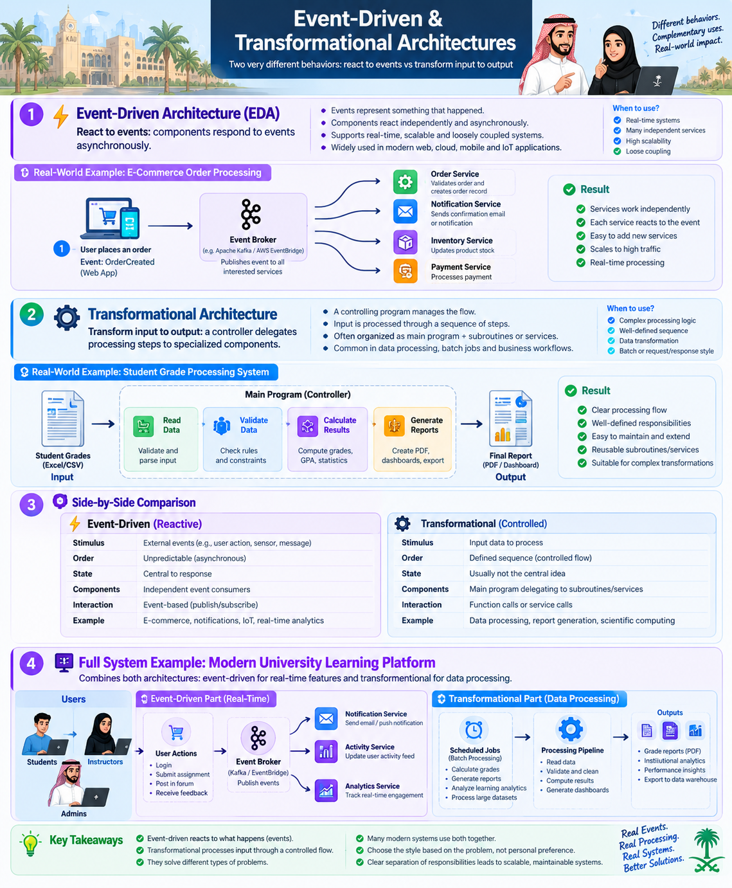

Topic 06 · Lesson 06
Event-Driven & Transformational Architectures
Two very different behaviors need two very different organizing structures: react to events versus transform input into output.
6of 10 pages
Visual learning · architecture comparison
Event-Driven & Transformational Architectures
Explore how event-driven systems react to events and how transformational systems process inputs into outputs, with modern e-commerce and university learning platform examples.
